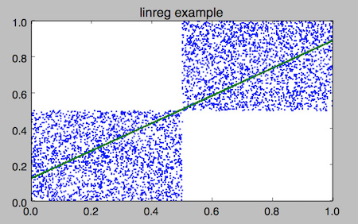

When you type mlr {something} myfile.dat, the {something}
part is called a verb. It specifies how you want to transform your data.
(See also here for a breakdown.)
The following is an alphabetical list of verbs with their descriptions.
The verbs put and filter are special in that they have a
rich expression language (domain-specific language, or “DSL”).
More information about them can be found here.
Here’s a comparison of verbs and put/filter DSL expressions:
Example:
POKI_RUN_COMMAND{{mlr stats1 -a sum -f x -g a data/small}}HERE
Verbs are coded in C
They run a bit faster
They take fewer keystrokes
There is less to learn
Their customization is limited to each verb’s options
You get to write your own DSL expressions
They run a bit slower
They take more keystrokes
There is more to learn
They are highly customizable
altkv
Map list of values to alternating key/value pairs.
POKI_RUN_COMMAND{{mlr altkv -h}}HERE
POKI_RUN_COMMAND{{echo 'a,b,c,d,e,f' | mlr altkv}}HERE
POKI_RUN_COMMAND{{echo 'a,b,c,d,e,f,g' | mlr altkv}}HERE
bar
Cheesy bar-charting.
POKI_RUN_COMMAND{{mlr bar -h}}HERE
POKI_RUN_COMMAND{{mlr --opprint cat data/small}}HERE
POKI_RUN_COMMAND{{mlr --opprint bar --lo 0 --hi 1 -f x,y data/small}}HERE
POKI_RUN_COMMAND{{mlr --opprint bar --lo 0.4 --hi 0.6 -f x,y data/small}}HERE
POKI_RUN_COMMAND{{mlr --opprint bar --auto -f x,y data/small}}HERE
bootstrap
POKI_RUN_COMMAND{{mlr bootstrap --help}}HERE
The canonical use for bootstrap sampling is to put error bars on statistical quantities, such as mean. For example:
$ mlr --opprint stats1 -a mean,count -f u -g color data/colored-shapes.dkvp
color u_mean u_count
yellow 0.497129 1413
red 0.492560 4641
purple 0.494005 1142
green 0.504861 1109
blue 0.517717 1470
orange 0.490532 303
$ mlr --opprint bootstrap then stats1 -a mean,count -f u -g color data/colored-shapes.dkvp
color u_mean u_count
yellow 0.500651 1380
purple 0.501556 1111
green 0.503272 1068
red 0.493895 4702
blue 0.512529 1496
orange 0.521030 321
$ mlr --opprint bootstrap then stats1 -a mean,count -f u -g color data/colored-shapes.dkvp
color u_mean u_count
yellow 0.498046 1485
blue 0.513576 1417
red 0.492870 4595
orange 0.507697 307
green 0.496803 1075
purple 0.486337 1199
$ mlr --opprint bootstrap then stats1 -a mean,count -f u -g color data/colored-shapes.dkvp
color u_mean u_count
blue 0.522921 1447
red 0.490717 4617
yellow 0.496450 1419
purple 0.496523 1192
green 0.507569 1111
orange 0.468014 292
cat
Most useful for format conversions (see
POKI_PUT_LINK_FOR_PAGE(file-formats.html)HERE), and concatenating multiple
same-schema CSV files to have the same header:
POKI_RUN_COMMAND{{mlr cat -h}}HERE
POKI_RUN_COMMAND{{mlr count-similar --help}}HERE
POKI_RUN_COMMAND{{mlr --opprint head -n 20 data/medium}}HERE
POKI_RUN_COMMAND{{mlr --opprint head -n 20 then count-similar -g a data/medium}}HERE
POKI_RUN_COMMAND{{mlr --opprint head -n 20 then count-similar -g a then sort -f a data/medium}}HERE
POKI_RUN_COMMAND{{mlr fraction --help}}HERE
For example, suppose you have the following CSV file:
POKI_INCLUDE_ESCAPED(data/fraction-example.csv)HERE
Then we can see what each record’s n contributes to the total n:
POKI_RUN_COMMAND{{mlr --opprint fraction -f n data/fraction-example.csv}}HERE
Using -g we can split those out by gender, or by color:
POKI_RUN_COMMAND{{mlr --opprint fraction -f n -g u data/fraction-example.csv}}HERE
POKI_RUN_COMMAND{{mlr --opprint fraction -f n -g v data/fraction-example.csv}}HERE
We can see, for example, that 70.9% of females have red (on the left) while
94.5% of reds are for females.
To convert fractions to percents, you may use -p:
POKI_RUN_COMMAND{{mlr --opprint fraction -f n -p data/fraction-example.csv}}HERE
Another often-used idiom is to convert from a point distribution to a cumulative distribution, also
known as “running sums”. Here, you can use -c:
POKI_RUN_COMMAND{{mlr --opprint fraction -f n -p -c data/fraction-example.csv}}HERE
POKI_RUN_COMMAND{{mlr --opprint fraction -f n -g u -p -c data/fraction-example.csv}}HERE
grep
POKI_RUN_COMMAND{{mlr grep -h}}HERE
group-by
POKI_RUN_COMMAND{{mlr group-by --help}}HERE
This is similar to sort but with less work. Namely, Miller’s
sort has three steps: read through the data and append linked lists of records,
one for each unique combination of the key-field values; after all records
are read, sort the key-field values; then print each record-list. The group-by
operation simply omits the middle sort. An example should make this more
clear.
POKI_RUN_COMMAND{{mlr --opprint group-by a data/small}}HERE
POKI_RUN_COMMAND{{mlr --opprint sort -f a data/small}}HERE
In this example, since the sort is on field a, the first step is
to group together all records having the same value for field a; the
second step is to sort the distinct a-field values pan,
eks, and wye into eks, pan, and
wye; the third step is to print out the record-list for
a=eks, then the record-list for a=pan, then the record-list
for a=wye. The group-by operation omits the middle sort and just puts
like records together, for those times when a sort isn’t desired. In
particular, the ordering of group-by fields for group-by is the order in which
they were encountered in the data stream, which in some cases may be more interesting
to you.
group-like
POKI_RUN_COMMAND{{mlr group-like --help}}HERE
This groups together records having the same schema (i.e. same ordered list of field names)
which is useful for making sense of time-ordered output as described in
POKI_PUT_LINK_FOR_PAGE(record-heterogeneity.html)HERE — in particular, in
preparation for CSV or pretty-print output.
POKI_RUN_COMMAND{{mlr head --help}}HERE
Note that head is distinct from top
— head shows fields which appear first in the data stream;
top shows fields which are numerically largest (or smallest).
POKI_RUN_COMMAND{{mlr --opprint head -n 4 data/medium}}HERE
POKI_RUN_COMMAND{{mlr --opprint head -n 1 -g b data/medium}}HERE
histogram
POKI_RUN_COMMAND{{mlr histogram --help}}HERE
This is just a histogram; there’s not too much to say here. A note about
binning, by example: Suppose you use --lo 0.0 --hi 1.0 --nbins 10 -f
x. The input numbers less than 0 or greater than 1 aren’t counted
in any bin. Input numbers equal to 1 are counted in the last bin. That is, bin
0 has 0.0 ≤ x < 0.1, bin 1 has 0.1 ≤ x < 0.2,
etc., but bin 9 has 0.9 ≤ x ≤ 1.0.
POKI_RUN_COMMAND{{mlr --opprint put '$x2=$x**2;$x3=$x2*$x' then histogram -f x,x2,x3 --lo 0 --hi 1 --nbins 10 data/medium}}HERE
POKI_RUN_COMMAND{{mlr --opprint put '$x2=$x**2;$x3=$x2*$x' then histogram -f x,x2,x3 --lo 0 --hi 1 --nbins 10 -o my_ data/medium}}HERE
join
POKI_RUN_COMMAND{{mlr join --help}}HERE
Examples:
Join larger table with IDs with smaller ID-to-name lookup table, showing only paired records:
POKI_RUN_COMMAND{{mlr label --help}}HERE
See also rename.
Example: Files such as /etc/passwd, /etc/group, and so on
have implicit field names which are found in section-5 manpages. These field names may be made explicit as follows:
POKI_INCLUDE_ESCAPED(data/label-example.txt)HERE
Likewise, if you have CSV/CSV-lite input data which has somehow been bereft of its header line, you can re-add a header line using --implicit-csv-header and label:
POKI_RUN_COMMAND{{cat data/headerless.csv}}HERE
POKI_RUN_COMMAND{{mlr --csv --implicit-csv-header cat data/headerless.csv}}HERE
POKI_RUN_COMMAND{{mlr --csv --implicit-csv-header label name,age,status data/headerless.csv}}HERE
POKI_RUN_COMMAND{{mlr --icsv --implicit-csv-header --opprint label name,age,status data/headerless.csv}}HERE
POKI_RUN_COMMAND{{mlr merge-fields --help}}HERE
This is like mlr stats1 but all accumulation is done across fields
within each given record: horizontal rather than vertical statistics, if you
will.
Examples:
POKI_RUN_COMMAND{{mlr --csvlite --opprint cat data/inout.csv}}HERE
POKI_RUN_COMMAND{{mlr --csvlite --opprint merge-fields -a min,max,sum -c _in,_out data/inout.csv}}HERE
POKI_RUN_COMMAND{{mlr --csvlite --opprint merge-fields -k -a sum -c _in,_out data/inout.csv}}HERE
Please see the DSL reference for more
information about the expression language for mlr put.
regularize
POKI_RUN_COMMAND{{mlr regularize --help}}HERE
This exists since hash-map software in various languages and tools
encountered in the wild does not always print similar rows with fields in the
same order: mlr regularize helps clean that up.
See also reorder.
remove-empty-columns
POKI_RUN_COMMAND{{mlr remove-empty-columns --help}}HERE
POKI_RUN_COMMAND{{cat data/remove-empty-columns.csv}}HERE
POKI_RUN_COMMAND{{mlr --csv remove-empty-columns data/remove-empty-columns.csv}}HERE
Since this verb needs to read all records to see if any of them has a
non-empty value for a given field name, it is non-streaming: it will ingest
all records before writing any.
As discussed in POKI_PUT_LINK_FOR_PAGE(performance.html)HERE, sed
is significantly faster than Miller at doing this. However, Miller is
format-aware, so it knows to do renames only within specified field keys and
not any others, nor in field values which may happen to contain the same
pattern. Example:
POKI_RUN_COMMAND{{mlr reorder --help}}HERE
This pivots specified field names to the start or end of the record — for
example when you have highly multi-column data and you want to bring a field or
two to the front of line where you can give a quick visual scan.
This is useful in at least two ways: one, as a data-generator as in the
above example using urand(); two, for reconstructing individual
samples from data which has been count-aggregated:
POKI_RUN_COMMAND{{cat data/repeat-example.dat}}HERE
POKI_RUN_COMMAND{{mlr repeat -f count then cut -x -f count data/repeat-example.dat}}HERE
After expansion with repeat, such data can then be sent on to
stats1 -a mode, or (if the data are numeric) to stats1 -a
p10,p50,p90, etc.
reshape
POKI_RUN_COMMAND{{mlr reshape --help}}HERE
sample
POKI_RUN_COMMAND{{mlr sample --help}}HERE
This is reservoir-sampling: select k items from n with
uniform probability and no repeats in the sample. (If n is less than
k, then of course only n samples are produced.) With -g
{field names}, produce a k-sample for each distinct value of the
specified field names.
POKI_INCLUDE_ESCAPED(data/sample-example.txt)HERE
Note that no output is produced until all inputs are in. Another way to do
sampling, which works in the streaming case, is mlr filter 'urand() &
0.001' where you tune the 0.001 to meet your needs.
POKI_RUN_COMMAND{{mlr sort --help}}HERE
Example:
POKI_RUN_COMMAND{{mlr --opprint sort -f a -nr x data/small}}HERE
Here’s an example filtering log data: suppose multiple threads (labeled here by color) are all logging progress counts to a single log file. The log file is (by nature) chronological, so the progress of various threads is interleaved:
POKI_RUN_COMMAND{{head -n 10 data/multicountdown.dat}}HERE
We can group these by thread by sorting on the thread ID (here,
color). Since Miller’s sort is stable, this means that
timestamps within each thread’s log data are still chronological:
POKI_RUN_COMMAND{{head -n 20 data/multicountdown.dat | mlr --opprint sort -f color}}HERE
Any records not having all specified sort keys will appear at the end of the output, in the order they
were encountered, regardless of the specified sort order:
POKI_RUN_COMMAND{{mlr sort -n x data/sort-missing.dkvp}}HERE
POKI_RUN_COMMAND{{mlr sort -nr x data/sort-missing.dkvp}}HERE
stats1
POKI_RUN_COMMAND{{mlr stats1 --help}}HERE
These are simple univariate statistics on one or more number-valued fields
(count and mode apply to non-numeric fields as well),
optionally categorized by one or more other fields.
POKI_RUN_COMMAND{{mlr --oxtab stats1 -a count,sum,min,p10,p50,mean,p90,max -f x,y data/medium}}HERE
POKI_RUN_COMMAND{{mlr --opprint stats1 -a mean -f x,y -g b then sort -f b data/medium}}HERE
POKI_RUN_COMMAND{{mlr --opprint stats1 -a p50,p99 -f u,v -g color then put '$ur=$u_p99/$u_p50;$vr=$v_p99/$v_p50' data/colored-shapes.dkvp}}HERE
POKI_RUN_COMMAND{{mlr --opprint count-distinct -f shape then sort -nr count data/colored-shapes.dkvp}}HERE
POKI_RUN_COMMAND{{mlr --opprint stats1 -a mode -f color -g shape data/colored-shapes.dkvp}}HERE
stats2
POKI_RUN_COMMAND{{mlr stats2 --help}}HERE
These are simple bivariate statistics on one or more pairs of number-valued
fields, optionally categorized by one or more fields.
POKI_RUN_COMMAND{{mlr --oxtab put '$x2=$x*$x; $xy=$x*$y; $y2=$y**2' then stats2 -a cov,corr -f x,y,y,y,x2,xy,x2,y2 data/medium}}HERE
POKI_RUN_COMMAND{{mlr --opprint put '$x2=$x*$x; $xy=$x*$y; $y2=$y**2' then stats2 -a linreg-ols,r2 -f x,y,y,y,xy,y2 -g a data/medium}}HERE
Here’s an example simple line-fit. The x and y
fields of the data/medium dataset are just independent uniformly
distributed on the unit interval. Here we remove half the data and fit a line to it.
POKI_INCLUDE_ESCAPED(data/linreg-example.txt)HERE
I use pgr for
plotting; here’s a screenshot.

(Thanks Drew Kunas for a good conversation about PCA!)
Here’s an example estimating time-to-completion for a set of jobs.
Input data comes from a log file, with number of work units left to do in the
count field and accumulated seconds in the upsec field,
labeled by the color field:
POKI_RUN_COMMAND{{head -n 10 data/multicountdown.dat}}HERE
We can do a linear regression on count remaining as a function of time: with c = m*u+b we want to find the
time when the count goes to zero, i.e. u=-b/m.
POKI_RUN_COMMAND{{mlr --oxtab stats2 -a linreg-pca -f upsec,count -g color then put '$donesec = -$upsec_count_pca_b/$upsec_count_pca_m' data/multicountdown.dat}}HERE
step
POKI_RUN_COMMAND{{mlr step --help}}HERE
Most Miller commands are record-at-a-time, with the exception of stats1,
stats2, and histogram which compute aggregate output. The
step command is intermediate: it allows the option of adding fields
which are functions of fields from previous records. Rsum is short for running sum.
POKI_RUN_COMMAND{{mlr --opprint step -a shift,delta,rsum,counter -f x data/medium | head -15}}HERE
POKI_RUN_COMMAND{{mlr --opprint step -a shift,delta,rsum,counter -f x -g a data/medium | head -15}}HERE
POKI_RUN_COMMAND{{mlr --opprint step -a ewma -f x -d 0.1,0.9 ../doc/data/medium | head -15}}HERE
POKI_RUN_COMMAND{{mlr --opprint step -a ewma -f x -d 0.1,0.9 -o smooth,rough ../doc/data/medium | head -15}}HERE
Example deriving uptime-delta from system uptime:
POKI_INCLUDE_ESCAPED(data/ping-delta-example.txt)HERE
tac
POKI_RUN_COMMAND{{mlr tac --help}}HERE
Prints the records in the input stream in reverse order. Note: this
requires Miller to retain all input records in memory before any output records
are produced.
POKI_RUN_COMMAND{{mlr top --help}}HERE
Note that top is distinct from head
— head shows fields which appear first in the data stream;
top shows fields which are numerically largest (or smallest).
POKI_RUN_COMMAND{{mlr --opprint top -n 4 -f x data/medium}}HERE
POKI_RUN_COMMAND{{mlr --opprint top -n 4 -f x -o someothername data/medium}}HERE
POKI_RUN_COMMAND{{mlr --opprint top -n 2 -f x -g a then sort -f a data/medium}}HERE
uniq
POKI_RUN_COMMAND{{mlr uniq --help}}HERE
There are two main ways to use mlr uniq: the first way is with -g to specify group-by columns.